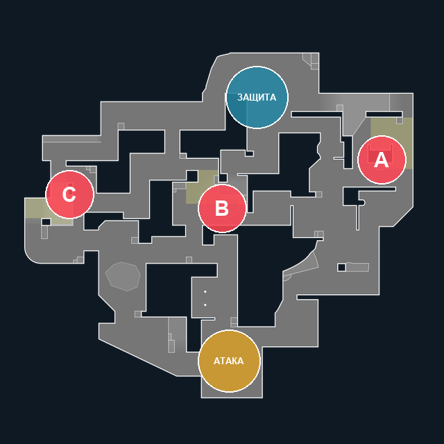

Lotus
На Lotus три места установки Spike: A, B и C. Внизу карты находится респ атаки, вверху — респ защиты. Между направлениями можно переходить через соединительные проходы и вращающиеся двери.
Нажмите на любой из пяти цветных кругов. Красные круги обозначают пленты, синий — респ защиты, жёлтый — респ атаки. Внешний материал откроется в новой вкладке.

Что открывают области
- A — схема и ориентиры плента A.
- B — схема и ориентиры плента B.
- C — схема и ориентиры плента C.
- Респ защиты — расположение респа защиты и соседние проходы.
- Респ атаки — расположение респа атаки и выходы к плентам.
Миникарта: Riot Games / Valorant-API.